Creating a durable topic
First of we need to run Tibco EMS
Administrator console utility by executing tibemsadmin.exe. It is a simple REPL
utility, after start you need to connect to
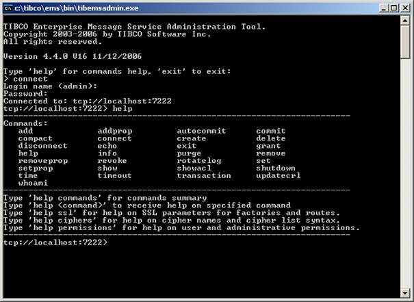
Now we create a static destination – a topic. We are going to create
topic with name “st.orders.incoming”. When we commit
the administrator command via the administrator utility the server will also
add this topic to configuration files. When it restarts all configuration
is reloaded then and you do not lost any destinations, its configuration or
server variables.
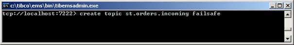
By pressing enter key the topic is created and server configuration is
modified. The topic is
Creating a consumer
Now we create durable consumer – durable in JMS means the server will persist all messages and consumer which goes offline automatically receives messages which was sent when the subscriber was offline.
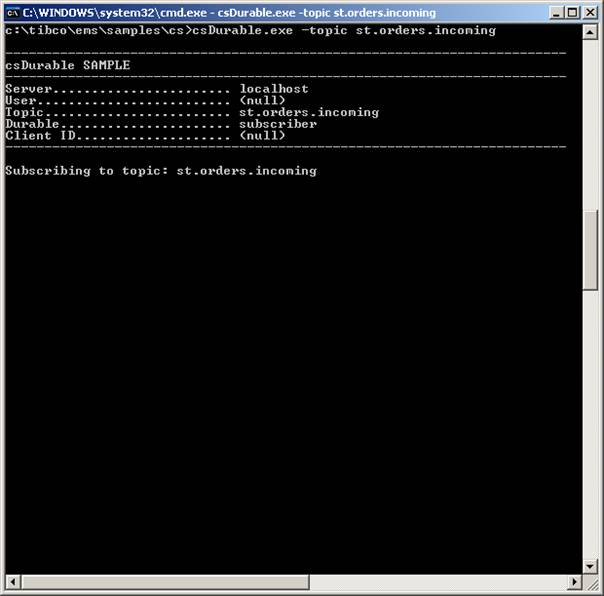
We can check the table of durable subscribers on the server using the
administrator:
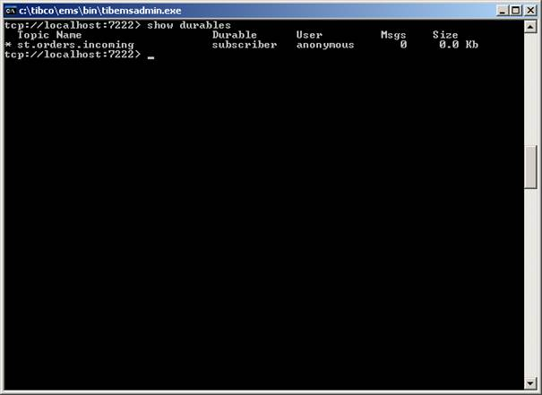
Now we publish a simple message with
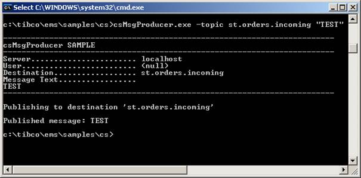
As you can see the message was
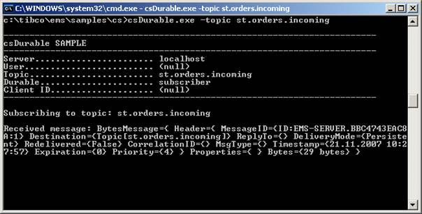
Consumer failure simulation
Now let us suppose the consumer will disconnect for any reason. We can
stop it by pressing control+c and sending several
messages to topic when the consumer is offline.
It is the time to see some statistics via administrator console. In the
following screen table of durable subscribers will be shown with 2 pending
messages in the topic st.orders.incoming.
Then we will look for the topics table and finally we will print details of the
topic:
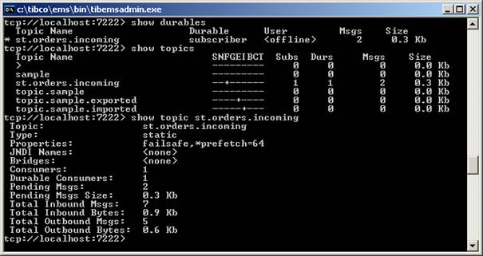
When the consumer reconnect all messages are
delivered automaticaly:
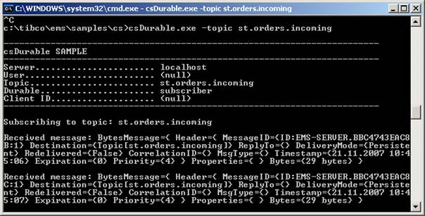
Publishing a message with a
priority
Unfortunately the example client does not support setting message
priority but as you can see from the examples above all messages was set with
priority 4. Man could modify the sample publisher to allow setting priority via
some command line parameter.
Message history can be implemented via destionation
bridging. For all destinations under name st.orders.> can be bridged to the destination st.history.orders. The st.orders.> is wildcard method that means “all
destinations named st.orders and all its
sub-destinations (children), like st.orders.something”. On that queue there will be history
consumer which could pass all messages to database warehouse for example.
Creating the history queue
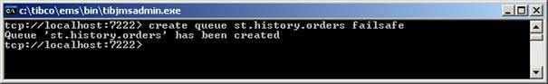
Creating message history consumer
with bridging
Now we create a bridge that will copy all messages from st.orders.> to st.orders.history:
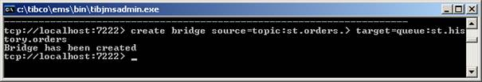
We will create a consumer that will consume all messages from the
history queue (and prints them to standard output, as we seen in the case
number 1). Than we will send two messages with “TEST” string into the st.orders.incoming destination which will be copied into st.history.orders destination where it will be picked up
immediately by the history consumer and printed to console:
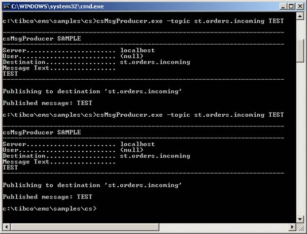
Messages are waiting in the history queue because we did not started the history consumer yet. Now we start it and it
will be picked up:
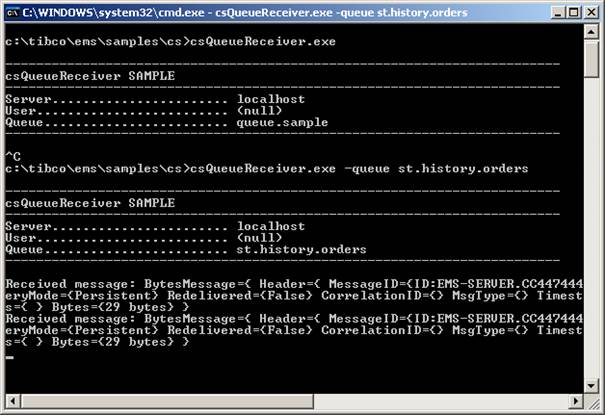
It is also possible to create filters (in
Please note the message database in the Tibco
EMS is not intended for archival purposes – it is only for failsafe reasons
(messages are never lost when the server fails). The message database is tuned
for performance and concurrent acces and not for milions of messages. There must be some history consumer
that will store all incoming messages to some persistent store like relation
database, data warehouse, log files etc.
Creating durable topic with
permissions
One-to-many mapping is very easy – the JMS standard defines that there
is possibility to have multiple subscribers on one topic. For this feature we
just create durable subscribers on failsafe topic. For more complexity we will
add authentication and we will do the message transfer in a local transaction
in this example.
Creating user
and topic with permissions for the user
In this example we will create two users (test, billing), the first user
will have permission only to create a (durable) subscription to st.billing (and all its children) and the second user
(billing) will only have permission to publish to the same topics. Finally the
authorization must be enabled globally since the default setting of the Tibco EMS has this feature switched off.
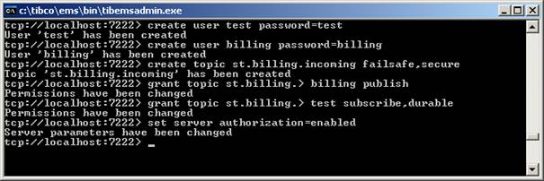
The permissions set on the destionation can
use wildcards. In this example we set the permissions to the destionation st.billing and all
its children. This gives great flexibility – you do not need to setup
permissions for each sub-destinations.
Creating multiple consumers
We need to presentate one-to-many messaging so
we will create two consumers with the very same command (must be run twice):
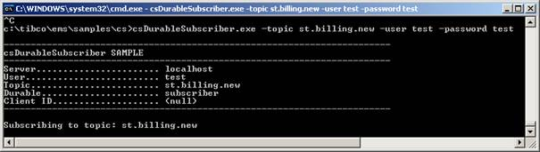
As you can see you have to specify username and password via commandline options. Without them it wont
be possible to create a subscription because the topic was set to secure. Server should deny access in
this case.
Sending one message to multiple subscribers
Its easy – we just publish the message.
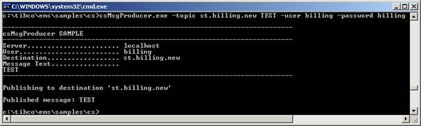
The message is